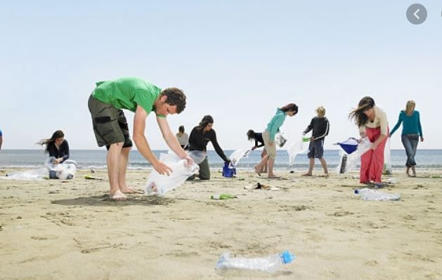

Blue Flag
June 5, 2019
Cleaning Beaches
Cuaderno,program to tackle the ocean litter issue – primarily caused by plastic pollution - through education for action, citizen science, and campaigns. We are all part of the solution and together we can restore our coastlines, one beach at a time.